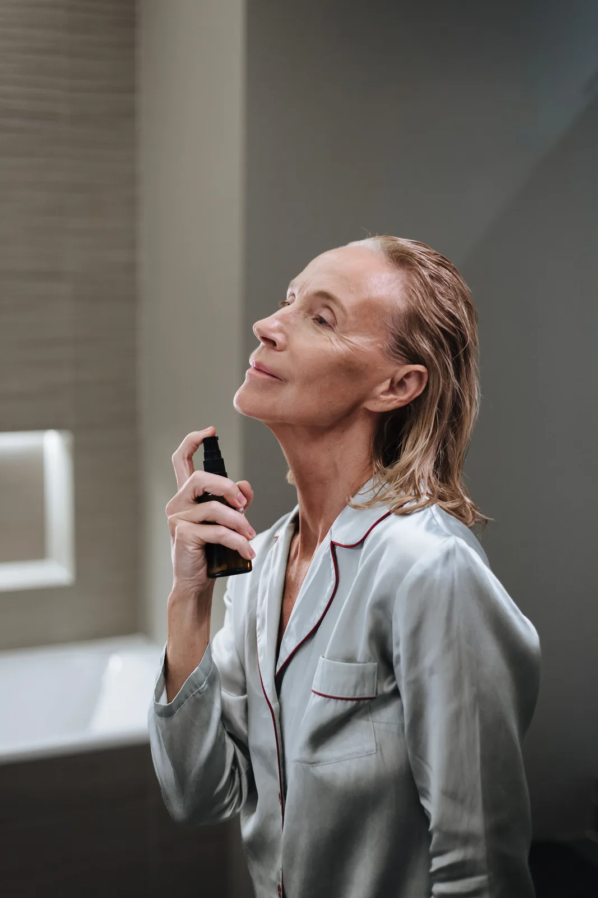
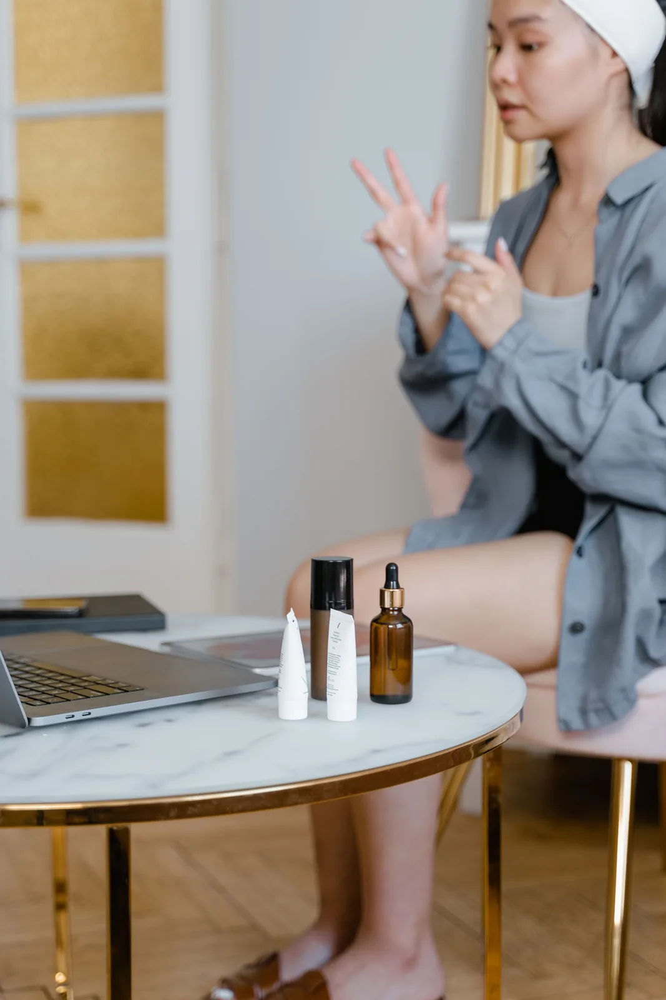
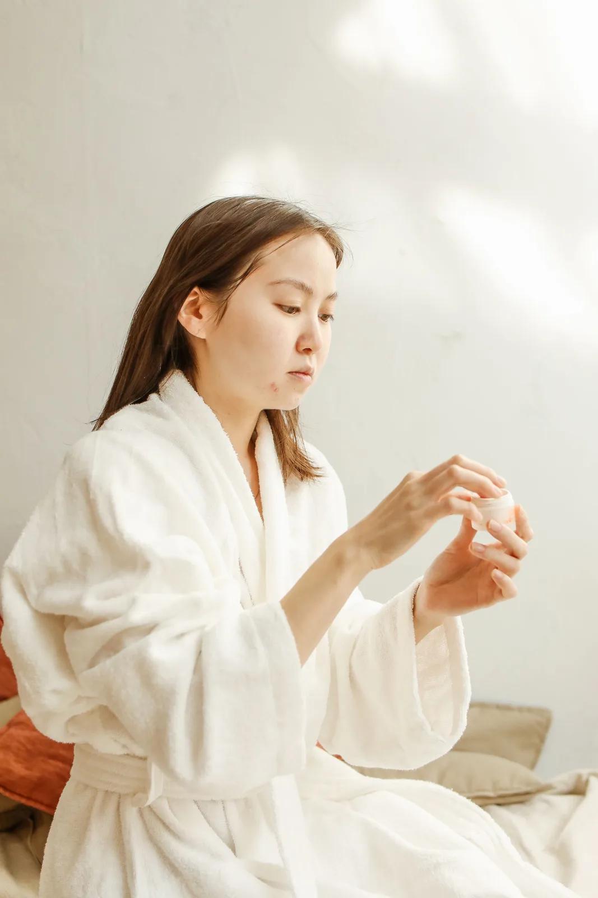
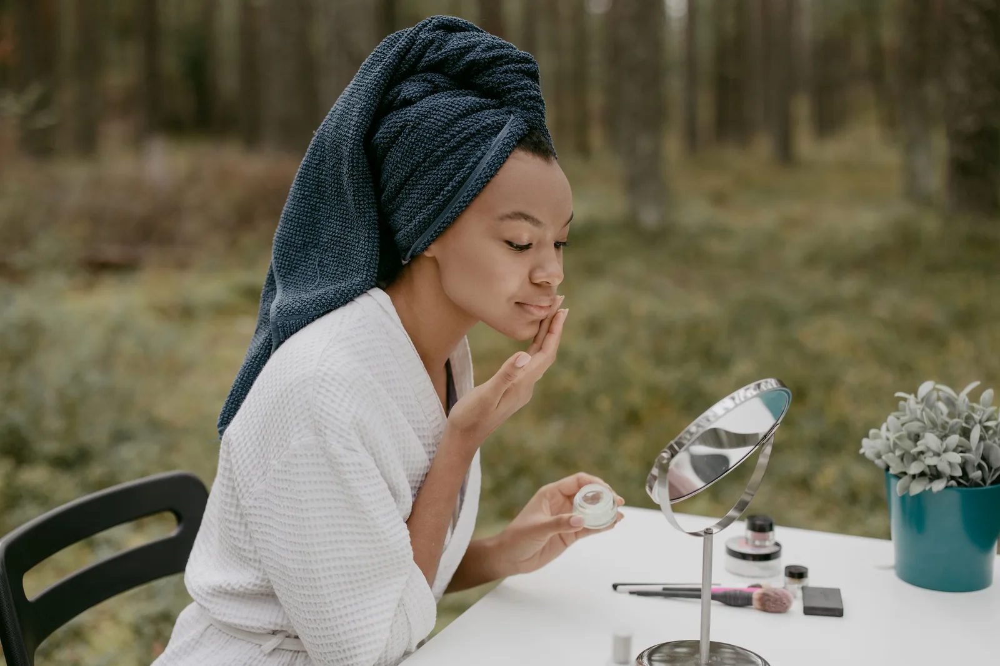
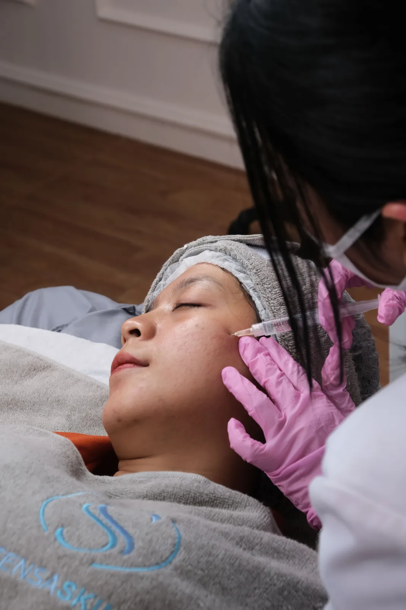
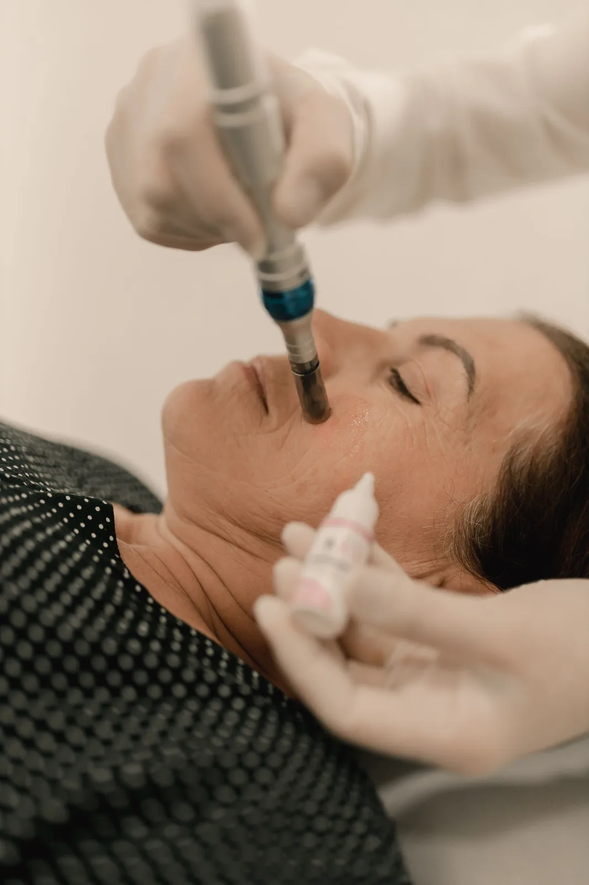
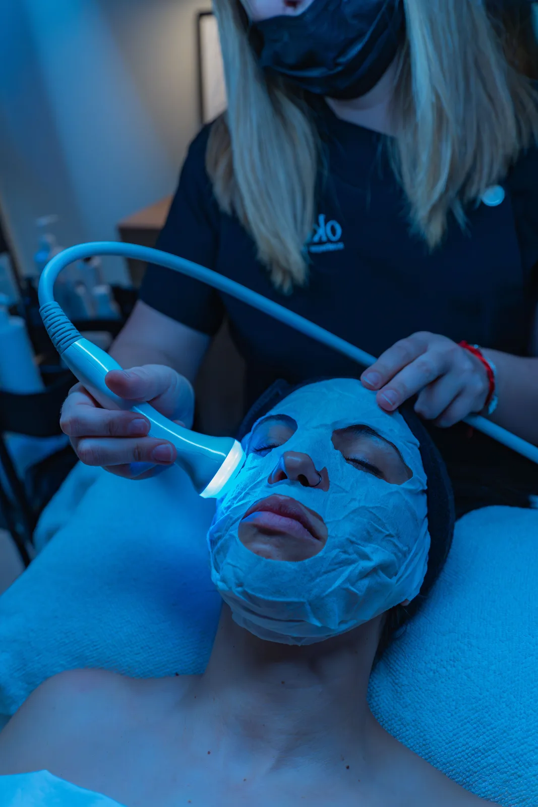
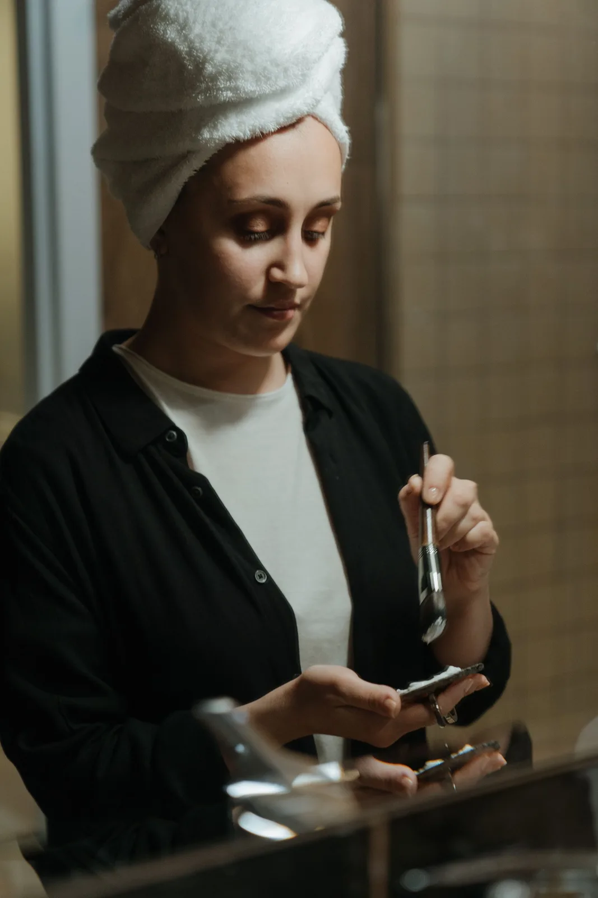
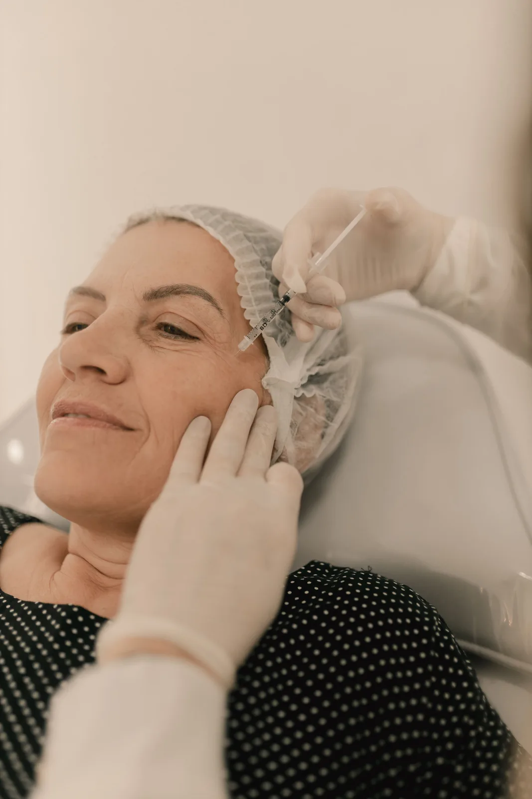
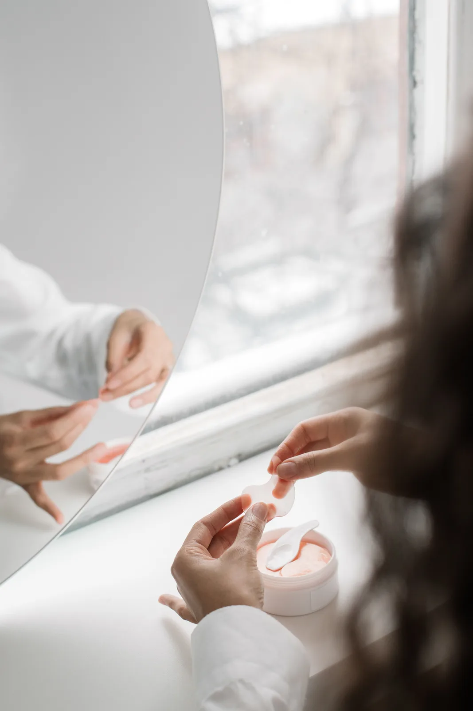

Cuidar da pele também é criar espaço.
Um modelo de site que troca a lógica de “clínica + cards” por uma narrativa mais sensorial, editorial e intencional.


objetos / ritual / detalhe

Precisão sem perder a delicadeza.
A interface não tenta parecer médica demais nem excessivamente feminina. Ela fica no meio: criteriosa, humana e visualmente segura.
O rosé deixa de ser “cor de fundo padrão” e passa a funcionar como assinatura, enquanto preto quente e creme constroem contraste.

Não é um menu. É uma curadoria.
Os serviços aparecem como capítulos de uma mesma jornada, com mais hierarquia e menos sensação de grade de produtos.
Curadoria facial
Uma leitura inicial para organizar prioridades e possibilidades de cuidado.

Renovação & textura
Protocolos voltados à aparência e ao toque da pele, definidos após avaliação profissional.

Tecnologia de luz
Tecnologia apresentada como ferramenta de precisão, conforto e acompanhamento.

Ritual de autocuidado
Um espaço para desacelerar e transformar rotina em um momento de presença.
O ritmo também comunica.
Em vez de uma timeline convencional, a jornada vira um tríptico fotográfico: cada etapa ocupa espaço, tem voz própria e continua conectada às demais.
Escutar
Objetivos, rotina e expectativas entram na conversa antes de qualquer escolha.

Selecionar
A proposta ganha foco: menos excesso visual, menos pressão e mais contexto para decidir.
Acompanhar
O relacionamento não termina na sessão. O site prepara espaço para orientação e continuidade.
O cuidado aparece nos detalhes que quase ninguém vê.
Um modelo pensado para comunicar critério, calma e clareza — sem transformar estética em promessa exagerada.
Escuta antes da indicação
A conversa aparece antes do protocolo para contextualizar objetivos, rotina e expectativas.
Menos excesso
Escolhas explicadas e uma apresentação mais calma, sem empilhar ofertas na mesma tela.
Informação com respiro
Textos curtos, hierarquia clara e espaços generosos tornam o conteúdo mais fácil de compreender.
Imagem com intenção
Fotografias têm função narrativa e aparecem em proporções diferentes para criar ritmo editorial.
Continuidade
A jornada contempla avaliação, experiência e acompanhamento em vez de encerrar no primeiro clique.
Feito para o celular
A composição muda no mobile para preservar impacto, legibilidade e conversão.
Texturas, gestos e pequenos rituais.
A galeria funciona como um editorial, não como um catálogo de fotos soltas.


Dúvidas simples merecem respostas claras.
No projeto final, esta resposta deve explicar o processo real de avaliação, duração, profissional responsável e orientações relevantes.
O modelo direciona essa decisão para uma avaliação profissional em vez de tentar diagnosticar pelo site.
São categorias de arquitetura de conteúdo e devem ser substituídas pelo portfólio oficial antes da publicação.
A estrutura está pronta para integração; nesta apresentação ela funciona como demonstração.
Seu tempo pode começar aqui.
O projeto final pode conectar este fluxo ao canal real de atendimento sem alterar a composição visual.